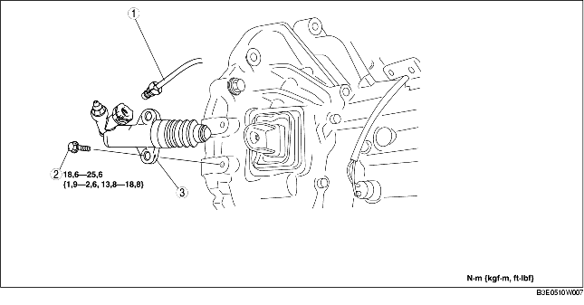

1. Déposer le cache inférieur.
2. Déposer les différents éléments selon l'ordre indiqué dans le tableau.
3. Pour la repose, suivre l'ordre inverse de la dépose.

.
1. Tirer l'attache dans la position indiquée par l'illustration, et tirer droit sur le connecteur de tuyau d'embrayage pour le dégager.
F35M-R
G35M-R
1. Reposer l'attache dans la position indiquée dans l'illustration.
F35M-R
G35M-R
2. Insérer le connecteur de tuyau d'embrayage tout droit.
3. Tirer sur le tuyau d'embrayage afin de vérifier qu'il ne se dégage pas, et le réinsérer complètement.